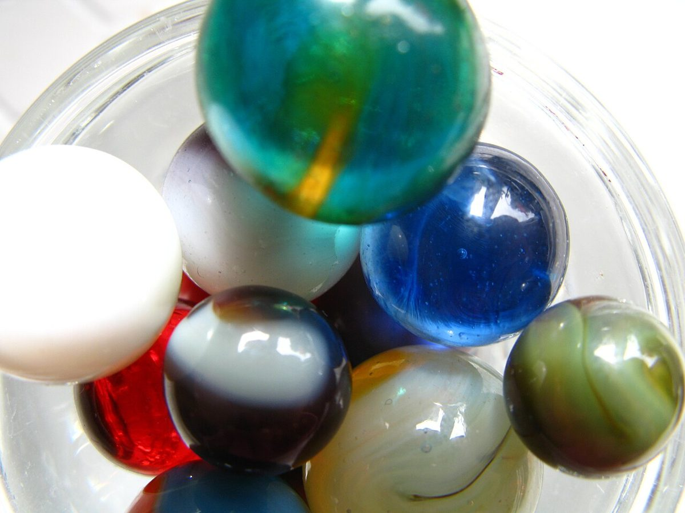
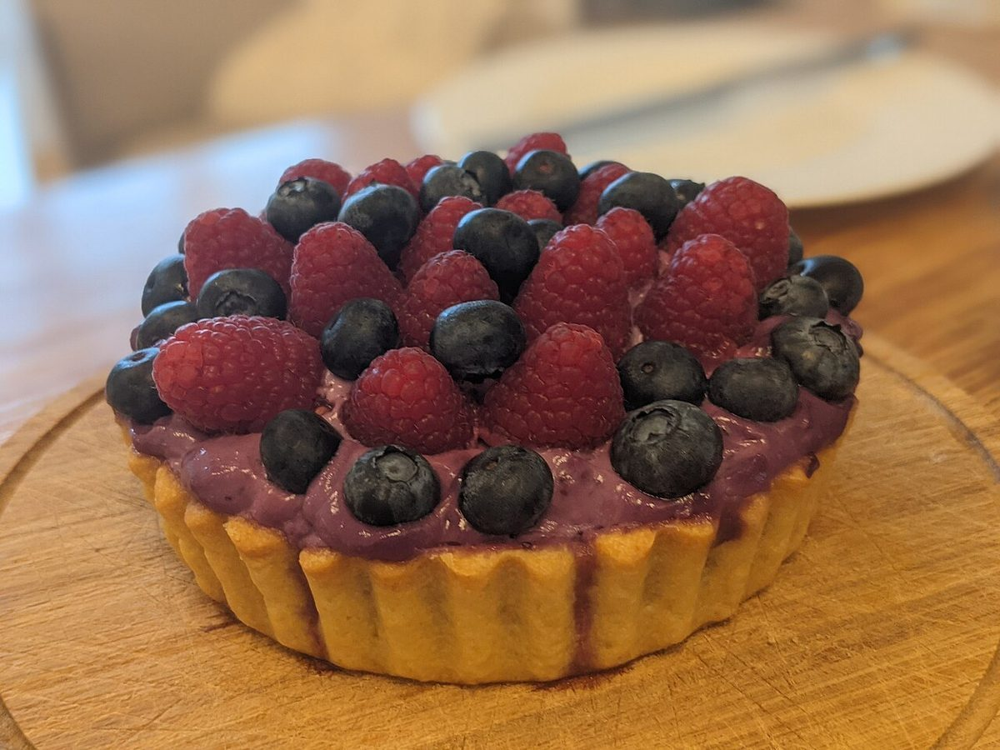
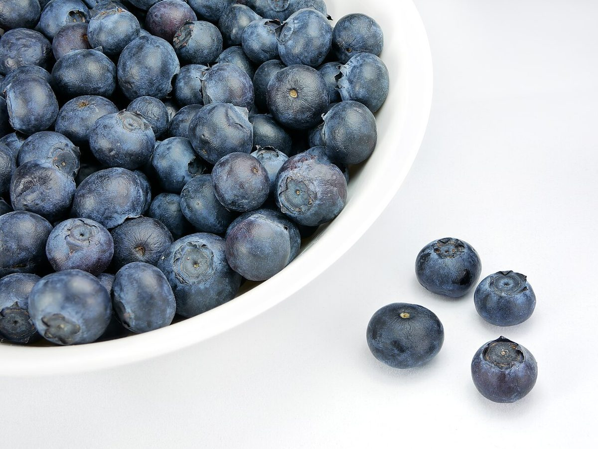
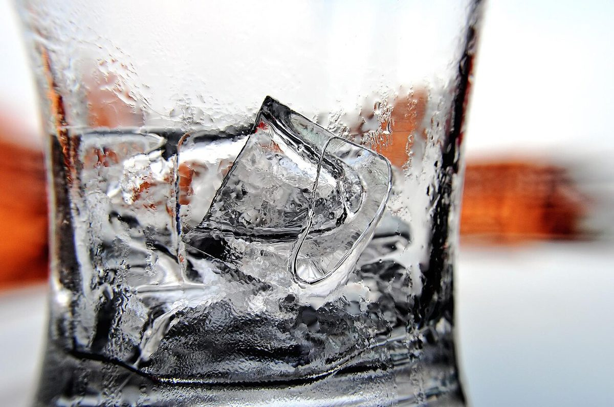
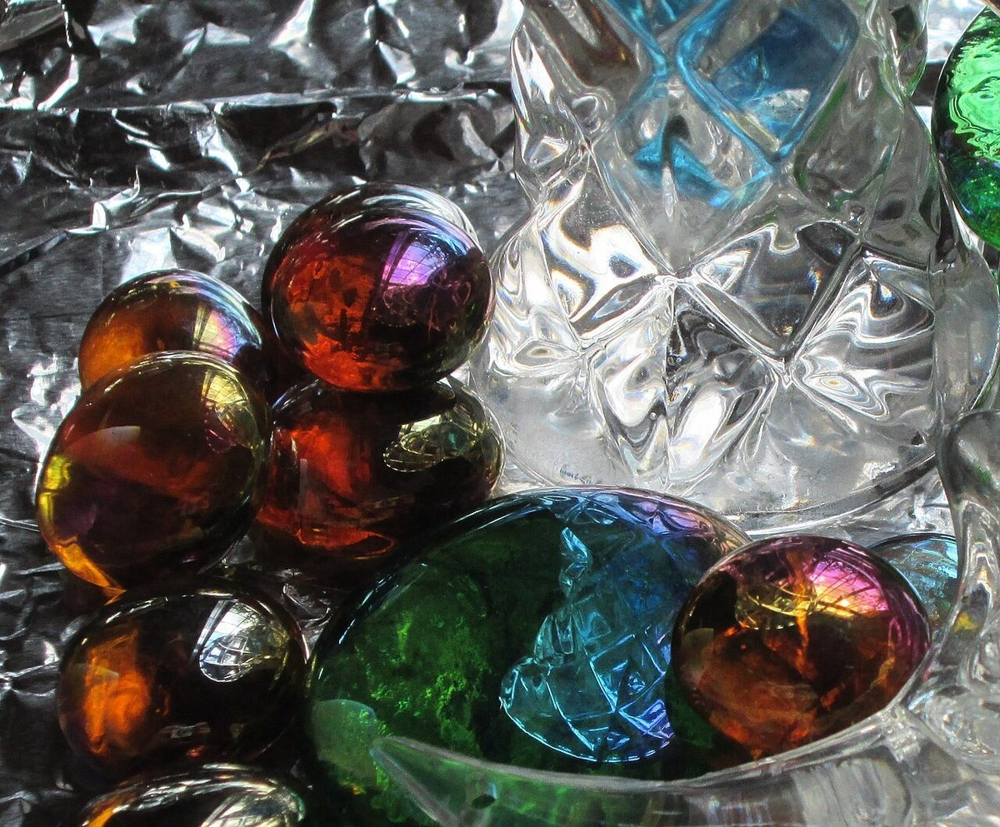
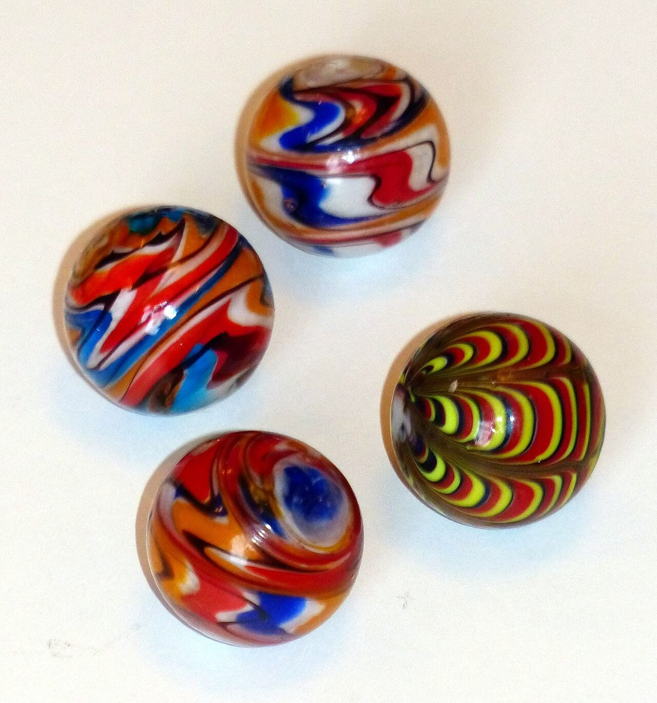
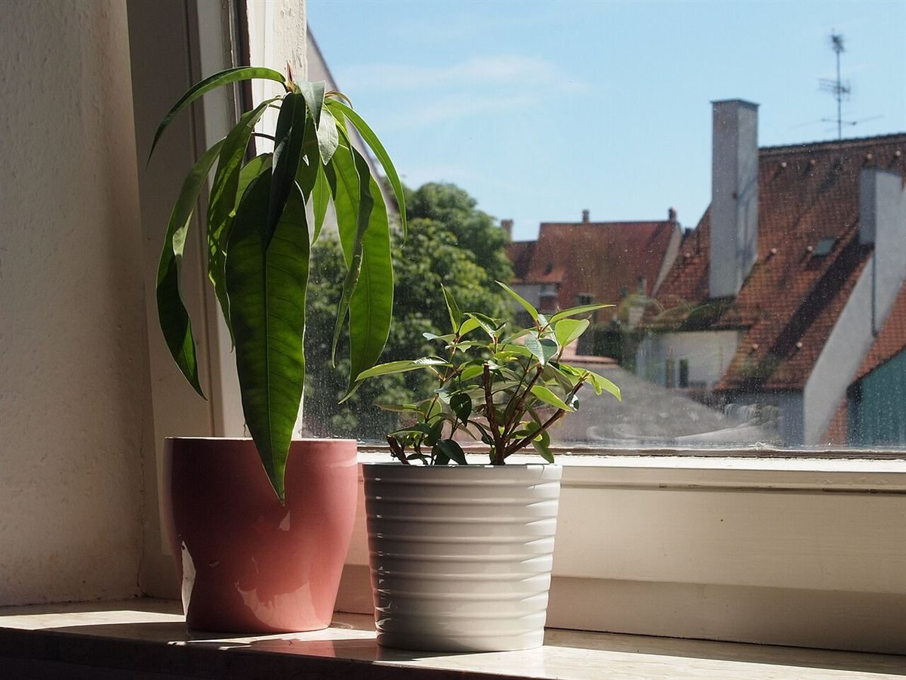
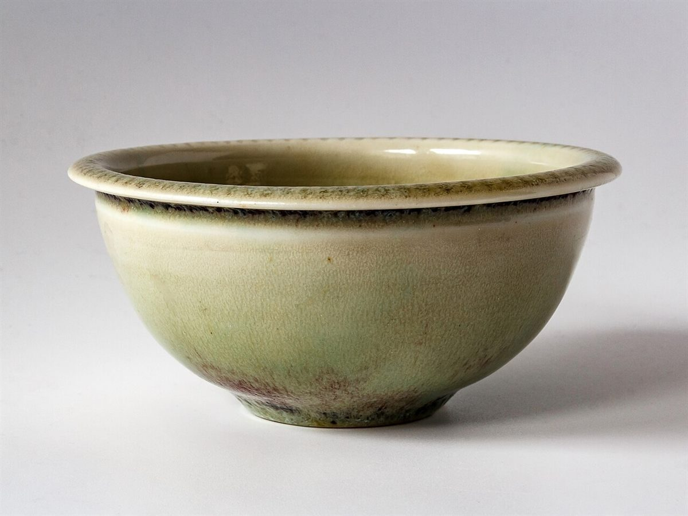
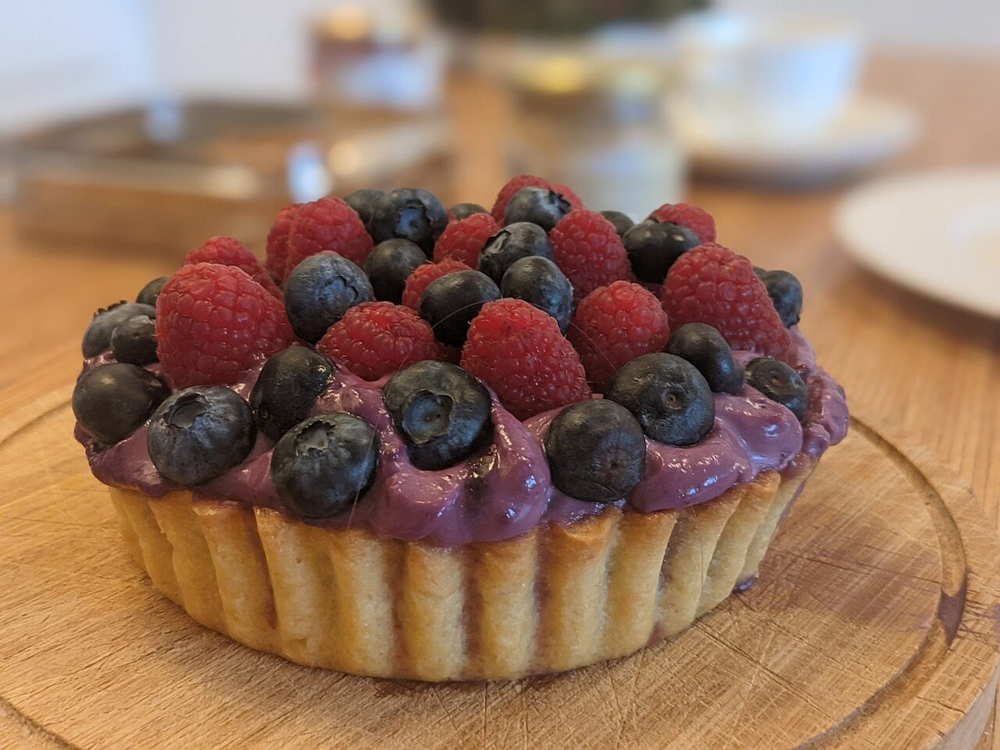

NIGHT PARFAITERIA / CHITOSE
Sumika
parfaiteria
スミカパフェテリア
お酒のあとに、もう一軒。夜にひらく、ひとさじのごほうび。
お店について
千歳駅から歩いて約10分、清水町の飲み屋街にある、夜に開くパフェのお店です。

Instagramでは、季節のパフェ・定番パフェ・スイーツ・ドリンク・フードメニュー、そして予約制のバースデーケーキが紹介されています。営業は夜のみで、日曜・月曜が定休日と案内されています。
夜の街で「〆のパフェ」を楽しむ。そんな過ごし方を、お店の雰囲気から感じ取った制作側のイメージでご案内します。
※店名「スミカ」の由来や、オーナー様の想いは確認できていません。文章は、確認できた事実と制作側のイメージです。






掲載写真はすべてフリー素材のイメージで、店舗の実際の様子・料理ではありません。
メニュー
Instagramで紹介されているカテゴリです。内容・価格は準備中です。
季節のパフェ
旬のフルーツを使ったパフェ。
内容・価格 準備中
定番パフェ
いつでも楽しめるパフェ。
内容・価格 準備中
スイーツ・ドリンク
パフェのおともに。
内容・価格 準備中
フード・バースデーケーキ
フードメニューと、予約制のバースデーケーキ。
詳細 準備中

口コミ
※以下は制作側が作ったイメージ例で、実在のお客様の声ではありません。
飲んだあとの〆に、ちょうどいい甘さでした。カウンターで静かに食べるのがよかったです。
夜遅くまで開いているので、仕事帰りにふらっと寄れます。季節のパフェが楽しみです。
ひとりでも入りやすく、グラスの中の色がきれいで写真を撮りたくなりました。



アクセス
- 住所
- 〒066-0041 北海道千歳市清水町2丁目29-1 B4ビル 2階
- 営業時間
- 夜のみ(Instagramに20:00〜25:00の記載あり)。最新情報はInstagramでご確認ください。
- 定休日
- 日曜・月曜(Instagram記載)
- 電話
- 準備中
- @sumikaparfaiteria2

写真クレジット
写真はフリー素材(Wikimedia Commons / Unsplash)のイメージで、店舗の実際の様子ではありません。縮小加工あり。
- 写真 tartS「Strawberry tart by Kirti Poddar」Kirti Poddar / CC BY 2.0
- 写真 tartB「Tart with strawberry and blueberries」Shisma / CC BY 4.0
- 写真 tartH「Tart with strawberry and blueberries 2」Shisma / CC BY 4.0
- 写真 blue「Dish of blueberries」Petar Milošević / CC BY-SA 4.0
- 写真 cream「Espresso with whipped cream (Unsplash)」Daniel Robert / CC0 1.0
- 写真 latte「The cup of coffee on a wooden table」Artem Beliaikin / CC BY 2.0
- 写真 ice「Ice cubes in a glass」Nattu / CC BY 2.0
- 写真 beads「Light refraction through Glass Beads and Crystal Glass Vase」Sudzie / CC BY-SA 4.0
- 写真 bowl「Light green ceramic bowl 1」W.carter / CC BY-SA 4.0
- 写真 marb「Several marbles」Conrad 7 / CC0 1.0
- 写真 marbg「Marbles in glass」Glenda Green / CC BY 3.0
- 写真 swirl「Glass Marbles」www.badobadop.co.uk / CC BY-SA 3.0
- 写真 plant「Wicker plant and big window (Unsplash)」Amanda Mocci / CC0 1.0
- 写真 plants「Topfpflanzen Fensterbrett」Angela Huster / CC0 1.0